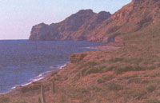
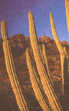

BASIL (OCIMUM BASILICUM)
Basil is cultivated worldwide as an annual plant. Many varieties have different compositions and flavoring characteristics. The herb is strongly affected by environmental factors like temperature, geographic location, soil, and amount of rainfall. Its thin branching root produces bushy stems growing from 1 to 2 feet high and bearing leaves of a purple hue, and two-lipped flowers, varying in color from white to red, sometimes with a purple tinge.
Maurice Messegue, a world-renowned French herbal folk healer, swears by basil as an excellent nightcap tea for restlessness and migraines. The steaming tea is also good for a patient with fever to inhale while covered with a blanket. Cool basil tea is good for all kinds of eye problems, as an eyewash and as an internal tea.
Obviously fresh basil leaves and unground seeds are the best to use when making a tea. If these are obtainable in your immediate area, bring 2 pints of water to a boil and add 15 basil seeds. Cover and reduce the heat, slowly simmering for about 45 minutes. Remove from heat and add 1 1/2 handfuls of fresh or half-dried basil and steep for another 25 minutes or so.
Drink or gargle with this tea an average of 2 cups per day, as needed. When lukewarm, the strained tea can also be used to bathe the eyes.
If ground basil is all that's available, another form of tea can be made and used for most of the previously described problems except as an eye wash. Bring 3 1/2 cups of water to a boil; remove from heat and add 1 1/4 level teaspoons ground basil. Cover and steep for half an hour. Sweeten with a touch of pure maple syrup and drink, on the average, 1 cup twice daily.
Ever had a headache and needed a simple relief remedy? It's easy to prepare. Just take a level teaspoon of dried, ground basil and put it into 1 cup hot water for 10 minutes, then strain. When the liquid is cool, add 2 tablespoons tincture of Witch Hazel that's been previously refrigerated for a while. You can get the Witch Hazel tincture at your local drugstore or supermarket pharmacy section. Apply the solution as a compress to the forehead and temples for relief you wouldn't believe possible!
Asparagus was cultivated in ancient times by the Romans. The vegetable is a member of the lily family and grows like a weed on the seacoasts of England and in the southern parts of the former USSR and of Poland, where the tundra steppes are literally covered with this garden delicacy providing excellent grazing for cattle and horses.
For those bothered with blackheads, pimples, and general facial and lip sores, this simple preparation might help. Tie 24 large spears into two separate bundles of 12 each. Trim evenly. Submerge all but the top 1 1/2 inches of the tips in preheated, boiling water. Simmer for half an hour, uncovered, until tender. Store cooked spears in refrigerator and use in the recipe below. Save the asparagus water for cleansing the face morning and night.
Cooked asparagus and its watery juice are very good for helping to dissolve uric acid deposits in the extremities, as well as inducing urination when it is lacking or infrequent. Asparagus is especially useful in cases of hypertension where the amount of sodium in the blood far exceeds the potassium present. Cooked asparagus also increases bowel evacuations.
Ginger is an erect perennial herb with an aromatic, knotty rootstock that's thick, fibrous, and whitish or buff colored. The plant reaches a height of 3 to 4 feet, the leaves growing 6 to 12 inches long. It is extensively cultivated in the tropics (i.e., India, China, Haiti and Nigeria, and especially Jamaica).
A fellow colleague, Dr. Daniel P. Mowry of the Department of Psychology at Brigham Young University in Provo, Utah, conducted an amazing experiment to show that powdered ginger root is the best remedy for nausea and vom- iting, surpassing even Dramamine, the medication usually recommended for motion sickness. Thirty-six undergraduate students were asked to take ei ther 100 mg. of Dramamine, 2 capsules of powdered ginger root, or 2 capsules of a placebo (powdered chickweed). Then each one was blindfolded and led to a special tilted chair that rotated when the motor was turned on.
Slightly less than half an hour was allowed to elapse after each volunteer swallowed one of the above substances. Then motion sickness was induced by the rotating chair. None of those who had taken either the Dramamine or placebo were able to last the full six minutes in the chair, whereas 50% of those who had swallowed the ginger capsules remained in the chair for the full time.
People frequently subject to blood clots are generally prescribed oral anticoagulants to help keep their blood relatively thin. One of the most commonly used drugs for this is warfarin sodium (better known as coumadin). Unfortunately, it's also used as a potent rat poison and can lead to serious internal hemorrhaging over an extended period of time. Ginger root may be an ideal replacement for such synthetic blood thinners. An average of two capsules twice daily in between meals appears to have helped a small number of those with such problems.
Nothing seems to work quite like a hot ginger compress on muscular aches and pains, joint stiffness, abdominal cramps, kidney stone attacks, stiff neck, neuralgia, toothache, bladder inflammation, prostatitis and extreme body tension. But keep in mind that-as wonderful as it is, time, considerable effort, patience and a certain change in lifestyle are all required in order to make it totally successful. Dr. Koji Yamoda from Tokyo shares this cure with me.
Bring a gallon of distilled or spring water to a boil in a large enamel pot with a lid on top. Meanwhile wash 1 1/2 ginger roots, but don't peel them. Then grate these roots by hand, using a rotating, clockwise motion instead of the usual back-and-forth movements. This keeps those tough fibers from building up on the grater, Dr. Yamoda said.
Next put this grated ginger root in the center of a clean, slightly moistened muslin cloth cut to form an 8-inch square. Then draw the corners together to form a little bag and tie the top with string, thread, or fish line. Be sure to leave plenty of room inside the bag for air and water to circulate.
Before putting this ginger bag in the hot water, make absolutely certain that the heat has been turned down and that the water is no longer boiling. Now uncover the pot and gently squeeze the juice from the bag into the water, before dropping it into the pot. Cover and permit the contents to simmer an additional 7 minutes. Dr. Yamoda informed me that the resulting liquid will acquire the hue of gold and yield a distinctive ginger aroma. The bag may be pressed against the sides of the pot with a wooden ladle to turn the water yellow, if the process seems to be a little slow in happening. Remove the pot from the stove when ready and set aside.
In order to be effective, ginger compresses must be applied relatively hot, he insisted, but not so hot as to scald the skin of the patient. Besides being used for compresses, this ginger broth can also be added to bath water to soak an aching back or sore muscles or for soaking tired, aching feet. The patient should be lying flat on the floor, or stomach or back, to receive the full benefits of these compresses.
A terry cloth hand towel is dipped into the pot, while holding both ends. The towel is lifted out and excess water is gently squeezed back into the pot. The steaming towel is then refolded to the desired width and applied directly to the site of pain. A second such compress can be placed immediately over or next to the first one, after which a large dry bath towel is placed over both compresses in order to retain as much heat as possible for the greatest length of time. The bath towel should be folded in half at least once before covering the compresses. Under these conditions, the compresses should remain fairly warm for up to 15 to 20 minutes. Dr. Yamoda recommended that another set of compresses be applied after this for a total treatment time of 4 minutes or so and repeated about 4 to 6 hours later, or as needed.
He explained that in all his years of clinical practice, nothing seems to have relieved most kinds of physical aches and pains as well as this remedy has. He has even used such ginger compresses on the chests of patients suffering from extreme asthma and bronchitis, with their mucus congestion breaking up in no time at all. Smaller wash cloth-size compresses can be applied against the side of the neck, throat, or jaw to relieve neuralgia, stiffness, swollen glands and toothache.
Mix enough powdered ginger and cold water together in a small bowl to make a thin, smooth paste. Then apply to the forehead and temples with the back of a large tablespoon and lie down for a while. This will help to relieve the excruciating pressure building up inside and take away that "exploding" sensation.
One of the best ways to help break a high fever and get rid of mucus buildup in the sinuses, throat, and lungs, is to drink some warm ginger tea. Grate enough fresh ginger root to equal about 2 level tablespoons, then add them to 2 cups of boiling water and cover, steeping for 30 minutes. Drink one cup every 2 1/2 hours.
Ayurvedic medicine is an ancient form of healing practiced on the Indian subcontinent. Recently, men like Deepak Chopra, M.D., and others, have helped to introduce and popularize Ayurvedic techniques in the West.
In his book, Perfect Health (New York: Harmony Books, 1990; pp. 249-50), Dr. Chopra's recommends an old Ayurvedic procedure for improving poor appetite and for curing indigestion due to nervousness, stress, or illness.
Equal parts (four tablespoons) of powdered ginger, brown sugar, and ghee (melted, clarified butter) are uniformly mixed in a stainless steel, ceramic, or glass bowl, then covered with a lid or plastic wrap and stored in a cool place.
To make ghee, gently melt one pound of unsalted butter in a quart saucepan over low heat. Then turn it up to medium. Carefully skim off the foam that rises up. When the butter begins to boil, giving off its water content, reduce the heat again, and slowly cook for another 10 minutes. The ghee is done when all the moisture has cooked out and the milk solids at the bottom of the pan have turned light golden brown; there should be a nutty aroma, but no hint of burning. Remove from the heat, let cool, and then pour into a clean glass Mason jar. It stores indefinitely in your refrigerator.
Dr. Chopra then advises that a small amount of this mixture be taken every morning followed by a good breakfast of hot cereal, fruit juice, bran muffins, and herb tea with cinnamon stick. The ginger mixture needs to be consumed according to this simple formula: begin with 1 teaspoon the first day and increase it by one-half every day until the 6th day; then reverse this and reduce the amount by one-half teaspoon until on the 11th day only 1 teaspoon is taken.
Dr. Chopra guarantees that appetite and digestion "should be normalized" if all goes well. But he cautions against using this procedure if abdominal cramps or stomach pains prevail. Under such circumstances, he wisely advocates "consulting a physician instead."
Catnip is a perennial herb of the mint family. Its erect, square, branching stem is hairy and grows from 3 to 5 feet high. The oblong, or cordate, pointed leaves have scalloped edges and gray or whitish hairs on the lower side. The flowers are white with purple spots and grow in spikes from June to September.
A major constituent in catnip, nepelactone, is quite similar in its chemical structure to the valepotriates, the sedative principles of valerian root. This helps to explain why a "cup of hot catnip tea taken at bedtime insures a good night's sleep."
To make yourself a truly effective nightcap, simply bring 1% cups of water to a boil. Remove from heat and add 1 teaspoon of, preferably, the fresh-cut herb or else of the dried and let steep for about 20 minutes until lukewarm before drinking. Honey may be added if desired. A small cup of warm catnip tea sweetened with honey is good for calming hyperactive kids.
Rural residents of the Ozark and Appalachian Mountains employ either mashed fresh catnip leaves or the dried herb powder as a crude poultice applied directly to sore gums or aching teeth, to relieve the intense pain and suffering. If the powder is to be used, a piece of cotton is moistened with water and then some of the powder applied on the surfaces, after which the cotton is put into the mouth and held firmly against the aching tooth or gums. The fresh leaves bring nearly instant relief, while the dried powder takes a little longer to work.
A strong catnip tea can be used as an effective eyewash to relieve inflammation and swelling due to certain airborne allergies, cold and flu, and excess alcohol intake ("bloodshot eye" syndrome). Bring 3 cups of water to a boil and add 5 teaspoons of cut fresh leaves. Reduce to low heat and let simmer for only 3 minutes. Remove from heat and let steep an additional 50 minutes. Strain and refrigerate in a clean fruit jar. Use as an eyewash with an eye cup several times each day. Or soak a clean terry-cloth towel in a warm solution of the tea and apply over the eyes for half an hour. While still warm, wrung out, used catnip tea bags can also be put on the eyelids for some relief.
Those who imbibe gin have only to take a whiff or sip of it to be able to discern the scent and taste of juniper berry. Although it also grows as a tree, one usually thinks of the juniper as a low, scraggly, creeping, prostrate evergreen with miniature vinelike needles instead of leaves, and fragrant blue berries that provide a nourishing and pleasant nibble.
Our family ranch in the Painted Desert wilderness of southern Utah is just below and east of Bryce Canyon, a world-famous national park noted for its beautiful towering sandstone formations. Juniper trees, wild Oregon grape shrubs, and sagebrush dot the landscape everywhere. It is a tree we have come to love and respect.
The common juniper is a low evergreen shrub between 12 and 30 feet high, growing low and spreading upright. The bark of the trunk is reddish brown and shreddy. The pine-family needles are straight, sharply tipped, ridged, and are nearly at right angles to the branchlets.
The male flowers are yellow and form a short catkin; the greenish female flowers are composed of three to eight pointed scales, some or all of which bear one or two ovules.
Scales of the female flowers become fleshy and fuse to form small, indehiscent strobili commonly called berries, which ripen the first, second, or occasionally the third year, depending upon the species involved. Immature berries are generally greenish; ripe berries are blue-black to red-brown and are usually covered with a conspicuous white, waxy bloom. I've discovered in my own investigative work that the fruit coat may be thin and resinous, as in eastern red cedar, Rocky Mountain, and one-seed juniper, or nearly leathery or mealy, as in the Utah juniper.
There are usually one to four brownish seeds per fruit. The seeds are rounded or angled, often with longitudinal pits. The seed coat has two layers-the outer layer is thick and hard, the inner thin and membranous. Embedded within the fleshy, white-to-creamy-colored endosperm is a straight embryo with two to six cotyledons. However, many seeds from a given tree may lack an embryo.
Sometimes berry crops will be heavy throughout a woodland; other times few berries are ever produced throughout a large geographic region. Almost every year a tree can be found in a stand that is so loaded with berries it appears covered with wax; such trees are popularly known as candle trees.
In the western United States, juniper also goes by the name of cedar; hence, a reference to "cedar berries" can also mean "juniper berries."
I'm intimately acquainted with juniper berries since I've used them for many years in treating a wide range of health problems. They are particularly efficacious as a treatment for certain lung disorders.
An elderly lady residing in Hurricane, Utah was suffering from bronchial asthma. She had been under doctors' care for some time and on just about every current medication, but with little relief or benefit. Both she and her family were getting very discouraged with her lack of progress.
The matter was referred to me by one of her daughters. I recommended the use of juniper berry oil in an electric vaporizer. I instructed the daughter to have her mother mix 15 drops of juniper berry oil with 3/4-cup distilled water and then put this in a vaporizer on a night stand by her bed and turn it on. The patient was then to lie down on the bed and inhale the antiseptic aerosol for one hour. This treatment would enable her to breathe better for up to 4 hours; then the process would need to be repeated.
Making the oil is quite simple. Ripe juniper berries (one full cup) are lacerated and pounded in a stone mortar and pestle. You can also use a cutting board and wooden mallet. Add the pulpy mixture to two pints of pure virgin olive oil and allow the entire solution to stand in a glass Mason jar in a warm place, with the lid lightly screwed on, for three days. After that the oil is strained, bottled, and labeled. Some of the needles can be crushed with the berries to increase its strength.
The daughter reported to me some time after this that her mother's condition had vastly improved after a few weeks on this treatment. The treatment is also recommended for emphysema, sinusitis, head cold, and influenza. The use of juniper berry incense or the aerosol oil also helps to disinfect a room previously contaminated by germs emitted from a sick son's breathing, coughing, nose wing, talking, or laughing. It knocks the flu for a loop .
When influenza hits, it usually spells long period of aggravating miseries, which seem to change with the infection going through its several different stages of activity. The worst part about the flu, however, is that it usually tends to linger for days, even weeks, after the worst symptoms have passed.
There are a number of herbal remedies for coping with the flu. But none of the herbalists I know or the books they have written have ever suggested hot juniper tea for this problem. In fact, I didn't even know myself just how good it was until an old Navajo shaman years ago acquainted me with it when I was an invited guest in his hogan, located out in the middle of nowhere.
Before I got there, I somehow picked up the flu "bug," and it didn't take many hours for it to aggressively dominate my body. But my friend, Ned, boiled up about one half cup of juniper berries into an old coffee pot sitting on top of an old iron stove situated in the center of the dirt floor and filled with one quart of boiling water. A series of black stove-pipes snaked their way up through a hole in the rounded clay roof, itself firmly packed down on top of sawed juniper planks.
Between the strong juniper scent and the hot tea he kept pouring me every couple of hours, I got better in a big hurry. The warmth of the tea felt good going my throat down and induced the perspiration I probably needed to throw off the excess poisons within me. The strong disinfectant properties within the berries themselves went a long way in killing the viruses responsible for my miseries.
Not only did I quickly recover, but I fully recuperated. I'm not being redundant with this statement. Remember earlier how I said that remnants of the flu usually tend to hang on for days or weeks after most people have gotten over the worst parts of their infections? Well, in my case, there was no additional evidence of anything lingering; when I got well, that was it, period.
Although there are many kinds of morning glories, this particular species is quite common throughout the U.S. and Canada, often growing more as a nuisance weed than cultivated in garden plots or farmers' fields. Its creeping, spreading, vine-like stems can cover an area up to seven feet in circumference. The trumpet-shaped flowers, while of different hues, generally are white.
A tincture of morning glory blossoms is useful for getting rid of a headache and to relieve inflamed eyes. Combine 1 1/2 cups of finely snipped flowers in 2 cups of gin. Put in a jar with a tight-fitting lid, and place on a window sill for about two weeks. Be sure to shake the contents twice daily. Strain through several layers of cheesecloth or gauze.
Soak a clean cloth with some of this tincture, wring out the excess and apply to the forehead or over closed eyes for relief. A small hand towel may be applied over the cloth to prevent the rapid evaporation of the alcohol.
If you should be outdoors and get bitten or stung by an insect such as a horsefly, mosquito, or wasp, then just look around for some morning glory. Pick a small number of the leaves, crush them with a smooth stone or hammer and then rub them on the afflicted site, retaining them in place either by holding them or else by covering with a piece of gauze and adhesive tape.
In the Bahamas local practitioners of folk medicine make a tea out of the leaves and flowers of morning glory. They use the resulting liquid for bathing herpes lesions, diabetic leg ulcers, gangrene, syphilitic sores and wounds. Bring 3 cups of water to a boil and add 1 cup of cut flowers and leaves. Cover, remove from the heat and steep for 45 minutes. Strain and use.
Throughout Jamaica and Brazil, morning glory leaves are used as effective poultices for drawing the purulent matter out of abscesses and boils. The quickest way for making such a poultice is to throw a handful of picked and washed leaves into a food blender with 2 tablespoons of ice water, and puree. Apply this thick pulp directly to the boil or carbuncle, whether previously lanced or not. Cover with a piece of gauze and secure with adhesive tape. Change every 45 minutes or so.
These shrubs belong to the heath family and are found mostly in the mountainous areas of the Arctic, in north temperate regions, and also in the mountainous tropics. They are especially abundant throughout Asia, where many of the popular cultivated species and hybrids originated. They ordinarily have large, shiny, leathery, evergreen leaves and clusters of large pink, white, or purplish flowers. Native American species include the great laurel, or rose bay; the mountain rose bay; and the western rhododendron.
Judging from the well-landscaped yards of many homes I've been to visit, it seems obvious that people love rhododendrons. Their handsome evergreen foliage and lavish floral displays are unmatched by any other temperate climate ornamental shrub.
But what most folks don't know is that a tea made from the leaves helps to alleviate the painful miseries accompanying chronic cystitis. Boil two pints of water. Then add one-third cup of cut rhododendron leaves. Cover, simmer on low heat for ten minutes, and set aside to cool. Strain and refrigerate. Drink one-half cup of the warm tea on an empty stomach every 4 hours, or as needed. Flushes Out Mucus Like Crazy
Many of us periodically suffer from excess mucus. It accumulates in our sinuses, the backs of our throats, in our lungs, and elsewhere. One half cup of the warm tea made from the shrub leaves and slowly sipped will strip out this unwanted phlegm in no time at all.
The same cool tea is helpful for resolving kidney complaints. Drink one quarter cup every five hours on an empty stomach for this. Don't worry about the color of your urine changing: that's normal for a tea like this.
CAUTION: Rhododendron tea is meant only for short-term use and medical situations. It is not to be drunk for very long periods of time. In the event of stomach distress, eat a piece of bread.
Reprinted from Heinerman's Encyclopedic of Healing Herbs & Spices by John Heinerman. Copyright ©1996 by Parker Publishing Company, Inc. Used by permission of Prentice Hall Press All rights reserved. You can order Heinerman's Encyclopedia through MOTHER's Bookshelf by calling 1-800-888-9098. Or send check or money for $13.95, plus $4.00 shipping and handling to Mother Earth News, P 0. Box 10941, Des Moines, IA 50340.
Please use product number MEB253 when ordering.
After lunch at Las Barajitas, Varinia makes us some coffee. While the coffee is brewing she steeps some ratary stems in hot water and makes an infusion that she adds to the coffee. "It purifies the blood," she explains. The coffee had earlier been brought in by boat, along with all the supplies for our lunch, wa ter for our coffee, everything except the ratany, which grows there along with many other medicinal herbs. Reachable only by boat, this remote coastal canyon on the sea of Cortes in Sonora Mexico was once inhabited by the Seri Indians who used the widely di verse coastal plants as medicines.
A five-hour drive from Phoenix, Las Barajitas has a completely unique ecosystem with the desert canyon supporting many varieties of cactus, including the largest barrel cactus in the world. Water runs through the canyon into the Sea of Cortes and is protected by the canyon walls from the drying desert sun. This creates a semitropical climate where there is enough moisture for palm trees and other semi-tropical plant life. Biodiversity is at its best here. Foxes, coyotes, and mountain lions inhabit the canyon and whales and dolphins pass by it. Though the area is still considered sacred and has been preserved, several simple structures with bunks and full bathroom facilities have been built for eco-tourists who want to study medicinal herbs, astronomy, desert habitats, or sea life. Solar panels outside each cabin generate enough energy for lights and hot water. There's no need for heat ing or cooling.
Guests can hike through the canyon and explore the unusual ecosystem; they will also find a large mounted tele scope at their disposal. With few lights in the re mote area and clear con ditions in the arid skies, Elephant Tree. viewing conditions are ideal. The staff at Las Barajitas Varinia and her family-cook local dishes and supply snorkel ing gear and sea kayaks for exploring the remote beaches and coastal caves and San Pedro island, an uninhabited island di rectly in front of Las Barajitas where the seals and pelicans congregate along its steep precipices and ledges. Two ships, a ferry boat and a tuna boat, have been sunk here, creating an artificial reef to increase the diversity of sea life and enhance the experience of scuba divers.
Here are some of the medicinal plants of Las Barajitas Canyon that con tinue to be used as the Seri used them. Three names are listed for each plant its common name, its sci entific name, and its Seri Indian name.
Red Elephant Tree-Bursera Suharo-Carnegiea. Hindsiana-Xoop INL: A tea made from tree shavings and leafy branch tips of desert lavender is a cure for asthma and congested breathing.
Elephant Tree-Bursera Laxiflora-Xoop Caacol: Tea from boiled bark strips is a remedy for cold, sore throat, and coughs.
Suharo-Carnegiea Gigantea-Mojepe: Fresh slabs, once the spines have been removed, are heated by coals and wrapped in a cloth. This wrap is then placed on aching muscles to help ease the pain of rheumatism.
Indian Root Arisotolochia Watsoni-Hataat Ihih: A decoction of Indian Root, boiled in water, cures toothache when you hold it in your mouth. Seep Willow-Baccharis Salicflora-Caaoj: Tea made from the leaves aids in weight loss. White Ratany-Krameria Grayi-Heepol: Tea made from the flower can help cure upset stomach and diarrhea. Tea made from the stems purifies the blood. Jojoba-Simmondsia Chinensis-Pnacccol: To obtain oil from the seeds, they are placed in hot ashes, removed before they are burned, and crushed on a metate. The oil from the seeds soothes the scalp. Hierba Del Manso-Anemopsis Californica-Comaanal: A mix of the whole plant including the roots is a disinfectant for sores. Sari Juanico-jacquinia Pungens-Cof. Washing the face with an infusion of the flowers soothes dizziness. Oregano-Lippia Palmeri-Xomcahift: Washing the whole head with tea made from this plant soothes dizziness. Rama parda-Ruellia Californica-Satooml: Washing the face with tea made from this plant invigorates, and diminished fatigue.
Jumping Cholla-Optuntia Fulgida-Cotecxet: The spine and skin are removed and the fleshy green inside boiled until it forms a liquid or elixir which, when drunk, is a remedy for heart pain or heart disease. A decoction from the inner bark can be drunk as a diuretic. Stegnosperma Halimifolium the leaves makes a paste that helps cure the pain of snakebite. Guayacan-Gualacum Coolteri-Mochi: the fruit, when crushed and cooked in water, makes a tea that can help cure the symptoms of dysentery. Sangrengrado-Jatropha Cinerea-Hamisj: Chewing the stems helps cure gum problems. Information on the above herbs was compiled by the staff at Canon Las Barajitas. To stay at Las Barajitas costs $70 per person for one night, $120 for two nights, and $165 for three nights. Prices include transportation via boat from San Carlos to Barajitas and back to San Carlos, lodging, three meals per day, and amenities snorkeling, kayaking and fishing gear, astronomy observations etc. For more information about visiting Las Barajitas call 1-888-790-03-66 or see the web page at www.sonora.gob.mx/tourismo/sancarlos.
|
 By Nik Wheeler |
|
 |